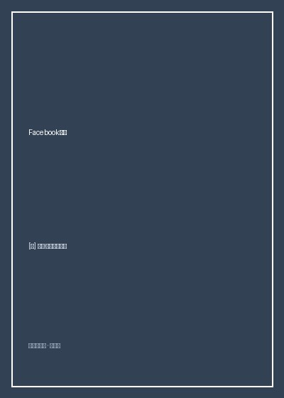

《Facebook效应》

总体观点
《Facebook效应》（The Facebook Effect）是记录21世纪互联网社交网络革命最详实、最具有第一手文献价值的商业史经典。资深科技记者大卫·柯克帕特里克（David Kirkpatrick）在马克·扎克伯格与Facebook核心高管层的全力支持下，耗时数年追踪采写了数百位当事人，极其生动地还原了这家彻底重塑人类社会交往形态的科技巨擘的狂飙史。
本书不仅是一部精彩绝伦的硅谷车库创业英雄史诗，更深刻揭示了“社交图谱（Social Graph）”与网络效应的毁灭性商业力量。作者细致回溯了Facebook如何以真实身份（Real Identity）为锋利手术刀，瞬间刺穿了昔日以匿名聊天为主的初代网络形态；展现了年仅十九岁的扎克伯格如何顶住投资人与管理层的重重重压，先后回绝了维亚康姆、雅虎数十亿美元的收购诱惑，近乎偏执地坚守“连接世界（Connecting the World）”的理想主义愿景。
全书还客观记录了信息流（News Feed）算法初次上线引发的轩然大波、Beacon广告系统的隐私丑闻反噬，以及社交网络在阿拉伯之春与全球民主运动中展现出的前所未有的政治动员潜能。这是一部关于年轻黑客如何以代码撬动现实世界权力平衡的惊心动魄之作。
核心观点
-
1. 真实身份是社交基石：彻底颠覆初代互联网的匿名假面
初代互联网信奉“在网上没有人知道你是一条狗”，而Facebook坚决要求实名制。真实身份带来了人际信任、社会责任与粘性远超匿名的强关系网络。
从常春藤高校的.edu邮箱绑定切入，学生们渴望在网上看到真实同学的作息与情感状态，这种极高纯度的真实关系链瞬间引爆了病毒式裂变。 -
2. 网络效应的赢家通吃：梅特卡夫定律在社交领域的终极展现
网络的价值与用户数的平方成正比。每增加一个新用户，不仅该用户获得了价值，网络中所有既有用户与新用户的潜在连接价值都被成倍放大。
当大学校园里超过80%的学生都加入Facebook后，尚未加入的学生将面临巨大的社交排斥与信息脱节，这促成了其余20%用户的不可逆涌入。 -
3. 拒绝短期变现的诱惑：愿景优先于短期利润的创业定力
在用户规模爆发期过早塞满广告或急于卖身套现，是无数优秀创业项目夭折的主因。扎克伯格坚信连接的密度远比短期季度财报数字重要得多。
2006年雅虎开出10亿美元天价收购要约，在整个董事会与管理层全部施压赞同的情况下，二十二岁的扎克伯格只用了十分钟就断然拒绝，坚持独立发展。 -
4. 动态信息流的算法革命：从被动查找迈向主动信息喂养
News Feed的上线是现代内容分发历史的分水岭。用户不再需要手动点击朋友主页逐一查看动态，系统算法将朋友们的所有细微变更汇流成瀑布流推送至眼前。
尽管上线首日引发数十万用户抗议“隐私被侵犯”，但后台数据显示用户在网站上的停留时间飙升了数倍，证明了信息流对人类窥视欲与好奇心的极强黏合力。 -
5. 连接的双刃剑：科技巨头的权力扩张与隐私治理危机
当一个私人商业平台的网络规模超越主权国家人口时，它不可避免地成为具备准主权影响力的公共基础设施，隐私泄露与信息操纵风险随之急剧攀升。
Beacon广告项目在未经用户明确许可下自动将用户在外部电商网站的购物记录广播给好友，引发了全网信任危机，迫使扎克伯格公开向全球用户道歉。
全书思维导图 · 知识脉络树
全书结构
-
第一部分：哈佛寝室的黑客风暴与常春藤狂飙
记录Facemash恶作剧受罚、Thefacebook上线最初几周的疯狂蔓延，以及与文克莱沃斯兄弟的创意纠葛。
描绘莫斯科维茨、萨维林与扎克伯格在柯克兰宿舍彻夜编码、喝红牛改写代码的早期极客岁月。 -
第二部分：挺进硅谷与天使投资的博弈
讲述扎克伯格搬至帕洛阿托、邂逅肖恩·帕克，以及彼得·蒂尔注资50万美元成为首位外部投资人的戏剧性历程。
还原扎克伯格穿着睡衣与拖鞋前往红杉资本总部开会并故意展示恶搞PPT的叛逆黑客行径。 -
第三部分：News Feed革命与开放平台的崛起
详尽复盘动态信息流上线的惊险风暴、开放API吸引第三方开发者打造Zynga农场游戏的生态繁荣。
分析如何利用F8开发者大会让外部网站一键集成“Like（赞）”按钮，将Facebook的触角延伸至整个互联网。 -
第四部分：全球连接的帝国与不可承受的重负
回顾超越十亿用户大关的跨国扩张、雪莉·桑德伯格加盟带来的商业化成熟，以及面临政治动员与隐私监管的全球博弈。
讲述哥伦比亚反政府游击队人质事件中，普通网民如何通过Facebook组织起百万人街头反恐大游行。